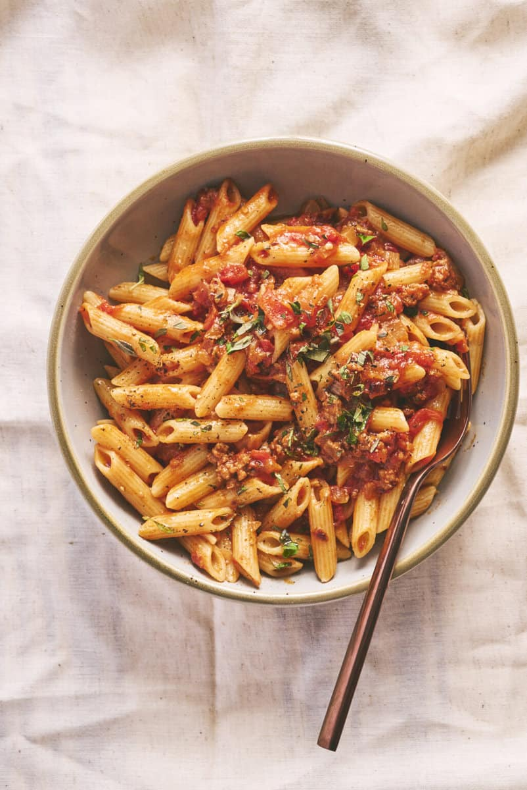

Description
Mildly spicy sausage pasta, or penne salsiccia, if you prefer. Makes a nice alternative to spaghetti bolognaise.
Ingredients
- 6 post sausages - whatever kind you like
- Onion
- A pepper
- 2 cloves of garlic
- Chicken stock cube
- Can tinned tomatoes
- Chilli flakes - around a teaspoon or to taste
- Bag of fresh basil
- Penne or rigatoni pasta to serve
Steps
Skin sausages and fry in a pan for 10 mins, crushing into a mince
Dice onion and pepper, add add to pan with crushed garlic
Fry for 5 mins
Add tomatoes, chicken stock cube and chilli
Cook for 10 mins
Chop the basil (not finely) and add to the mix
Serve with pasta. Add more chilli if required